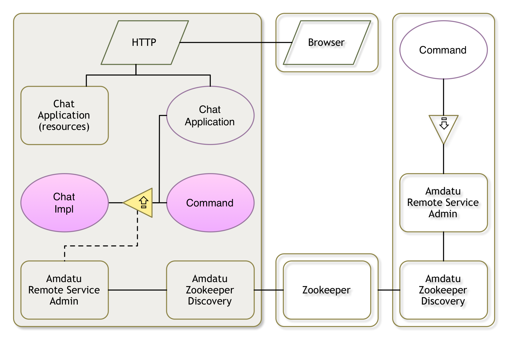

Using Gogo to Test our Implementation

Running
This section assumes you come from the previous section, there should be a framework running. If you come from another place, make sure the framework is running as described in Implementing the Chat API. We will add a Gogo shell command in this section without restarting the framework.
Chatting
We do have a very lonely Chat service in our service registry. The easiest way to explore such a service is to write a little Gogo command. In this case we want the following sub-commands:
chat– Provide a help messagesend <from> <to> <text>– Send a chat message to a person with the given sender.members– Get the listed members
How to Make a Gogo Command
Gogo was designed to call methods on services, it only requires permission to do so from the implementation. The implementation gives this permission with the following service properties:
Debug.COMMAND_SCOPE– This is the scope of the command. If command names overlap between different services then the scope can be used to disambiguate by using the scope, a colon, and the command. For example:chat:members.Debug.COMMAND_FUNCTION– This the name of the command. This name must be the name of one or more public methods in the implementation class. Gogo will coerce any parameters in the command line to the parameters to a matching method.
The following code implements just the help command (same as the scope).
package osgi.enroute.examples.chat.provider;
import org.osgi.service.component.annotations.Component;
import osgi.enroute.debug.api.Debug;
@Component(
property = {
Debug.COMMAND_SCOPE + "=chat",
Debug.COMMAND_FUNCTION + "=chat",
Debug.COMMAND_FUNCTION + "=members",
Debug.COMMAND_FUNCTION + "=send"
},
service = Command.class
)
public class Command {
public String chat() {
return "chat help\n"
+ "send <from> <to> <text> send a message\n"
+ "members get list of members\n";
}
}
It might surprise you that we need to specify the service=Command.class. The reason is that the default is that a component is not registered as a service when it does not implement an interface. We force it to be registered as a service so that Gogo can pick it up.
So save the source file.
You can now try the command but since we’ve not written it yet, it will therefore give an error.
g! chat
chat help
send <from> <to> <text> send a message
members get list of members
g! members
gogo: IllegalArgumentException: Cannot coerce members() to any of []
Members
The easiest way to keep a list of members is to track them using Declarative Services. If we track the Chat services in a Map, where the key is the user name, then we can use the keys of the map as the list of members. This looks like:
private Map<String, Chat> members = new ConcurrentHashMap<>();
public Collection<String> members() {
return members.keySet().stream().sorted().collect(Collectors.toList());
}
@Reference(
cardinality = ReferenceCardinality.MULTIPLE,
policy = ReferencePolicy.DYNAMIC
)
void addChat(Chat member, Map<String, Object> map) {
String userName = getUserName(map);
if (userName != null)
members.put(userName, member);
}
void removeChat(Chat member, Map<String, Object> map) {
String userName = getUserName(map);
if (userName != null)
members.remove(userName);
}
private String getUserName(Map<String, Object> map) {
return (String) map.get(Chat.USER_NAME);
}
After saving the file, we can now try to get the current members:
g! members
osgi
Send
To bring our Chat service out of isolation we need to send a message to it. The code for this could look like:
public boolean send(String from, String to, String text) throws Exception {
Chat chat = members.get(to);
if (chat != null) {
Message message = new Message();
message.from = from;
message.to = to;
message.text = text;
return chat.send(message);
}
return false;
}
After we’ve saved the file we should be able to use the send command.
g! send pkriens osgi hello
pkriens: hello
true
Que Vadis
We now got a simple command running that allows us to see the members (the Chat services) and a command to send a message to specific service. So we’re all set for a world where we’re inundated with Chat services! In the next section we will export our service and import our peer’s Chat services.